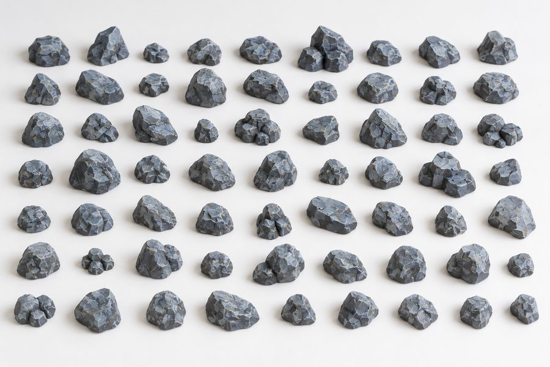
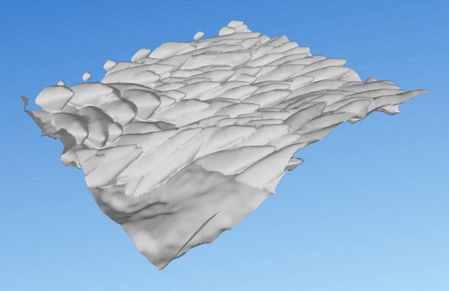
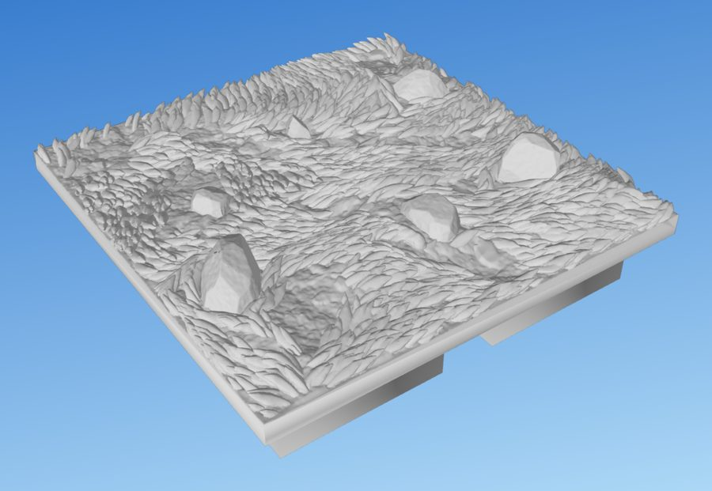

How the labs make their looks
The labs produced Shawn's best results. Each is a single Python file that writes one STL, judged by eye. This page takes each one apart: its pipeline, the tricks that make it read at tabletop distance, how it guarantees printability, and which parts are general mechanisms written as lab-specific code.
The canvas demos are simplified JavaScript re-implementations of each lab's main idea, written for this page. They are not lab output. Real renders appear beside them. Line numbers refer to HEAD, except clifflab/rockpile.py, which refers to commit 803ba4f.
One recipe, three scales
Every approved look is built the same way: a large form, then a mid-scale structure that gives it character, then fine grain. Printability is guaranteed at each scale as it is built, and checked once at the end.
Lineage: who imports whom
dirt_relief, and clifflab takes grasslab's stl_safe and audit_overhang. meadowlab and shorelab are almost pure composition. The red dashed edges are where one lab changes another's module globals instead of passing parameters. The language must make that unnecessary.rocklab: faceted rocks
A rock here is a convex body cut by planes. The facets come from intersecting half-spaces, not from displacement. That is why the edges stay crisp and the facets come in mixed sizes.

rocklab/reference/approved-reference.png), not lab output. rocklab/out/ holds only STLs.Pipeline
scatter(:360): builds N = U(9,12)·squares/4 items, then places the largest first by dart throwing (400 tries each, 1.5 mm plus the radii apart).make_item(:339): diameter D = 6 + 9·U1.4 mm. One in four is a cluster of 2–4 fused stones.make_body(:146): the hull of a profile that never widens going up (dome, slab, block or wedge) on an elliptical footprint (blocks use a superellipse, p = 3), with ±8% lumps that depend only on angle.cut_facets(:187): blue-noise seeds with radii 0.9–2.5 mm × √(D/15). Each seed contributes a tangent plane tilted up to 14°. No plane may have nz < −0.5. Each rock gets 30–165 facets.chip_corners_edges(:231): extra planes at corners and at edges sharper than 18°. Each chip removes at most 3% of the volume.texture(:283): refine to 0.25 mm, then fBm grain at 0.45 mm scale and ±0.12 mm along the normals, halved near edges and zero at the base.
Loved: crisp plane edges and mixed facet sizes. Rejected: fracture scallops ("horrible"), shaving vertices into dice, flake scars, uncapped chips, harder facet tilt.
clifflab: a heroic cliff from stacked stones
The live generator stacks blocks under gravity into a target height field. Each block is then dressed, seated, cracked and grained. The older clifflab.py carved a depth map instead; Shawn called its rev 3 "the best cliffs I've ever seen", but the stacked version is the one under active development.

clifflab/out/sweep-2x2-s1-4.png, seed 1. This render predates rounds 8–11 of the crack relief.Key tricks
- Gravity stack (
stack:554): take the lowest unfilled cell, grow a rectangular footprint that snaps to the edges of the pocket, rest it on a least-squares bed plane, and redraw heights so neighbouring tops never line up. That is how courses appear. - The seat (
_seat:1488): a stone resting on another stone gets an underside built from the actual bed, sloped at the overhang limit (55° plus a 3° margin). Flat ceilings are impossible by construction (flat metric 0.0). Some overhang remains: 1.1–12.6 mm² per tile in round 11, which is why the audit stays a gate. - Hidden core (
_core:1609): the support eroded by 2 mm. Gaps between stones are meant to show a dark recess. It is not yet a guarantee: round 11 still had see-through ray holes (seed 3: 5, seed 4: 1, 2×2 massif: 262). - The cut guard (
_Cutter:989) accepts a dressing plane only if it stays within loss limits, undercuts nothing resting on it (a boolean volume test against the support solid, at most 1 mm³), and lets thin-fin area grow by no more than 0.4 mm², measured on 5 plan slices. - Crack network (
_crack_net:1068): coplanar faces are merged so cracks cross joints. Each crack grows by random walk until both ends hit something, and is cut as a V-groove 1.2–1.8 mm deep. - Fit to tile (
_fit_tile:1415): a stone crossing the tile edge is scaled back to meet it, never clipped. - Dirt on top (
_dirt_layer:1897): ray-cast the rock tops, then fill lows and slits by morphological closing.
Rulings: the straight top is intended, massive blocks are wanted, the limit is 55° ("45 is too conservative"), never clip at the tile edge, seams must read as grooves, grain must be isotropic. Hated: Voronoi flake chips (reverted). Still open: the crack relief scores about 5/10 against reference N.
grasslab: combed ribbons of stroke blades
Grass reads at tabletop distance because of how it is organised at mid scale: ribbons that flow, meander and part around obstacles. The blades themselves are built in printer units, as stacks of 0.2 mm layers, each a whole number of 0.45 mm lines wide.

The signature trick: in-phase meander
make_direction (:311) computes an along-flow coordinate s by least squares, solving a Poisson equation with an FFT (_along_flow_coord :291). It then adds A·sin(2πs/15 mm + φ) to the angle. Neighbouring streamlines therefore wave in phase, like combed hair. Because the field is a scalar angle, it cannot contain vortices.
Blade cross-section in printer units
Loved: "make that the … only way to generate grass blades"; combed ribbons; blades standing on dirt with undercut tips. Rejected: turf mass, skirts and pads; a voxel FDM backstop; height-field carving; Catmull-Rom interpolation between layers; per-frond sickle bends; under 1,500 faces per blade.
meadowlab: rocks, grass and bare earth together
meadowlab writes almost no geometry of its own. It wires grasslab and rocklab together through what is in effect an obstacle interface: footprint, wrap, blocker, seat. That interface is the most useful thing it found.
- Two RNG streams: grass uses
seed, rocks useseed+1000003. - Ground, flow and swaths come from grasslab unchanged. Rocks are placed first.
footprint_masks(:62): slice each rock 0.45 mm above its base.apron_shapes(:86): 35% of rocks get a one-sided bare lens, a downstream wake 60% of the time.fill_bare_earth(:115) adds free lenses until 20% of the ground is bare.- The flow wraps around the lenses plus an eye shape (
|a|/R + (b/R)², axis along the base flow) of radius R + 0.6 mm around each rock, where R is the clearance radius rather than the real footprint. Blades are tucked at the rocks and lowered beside them. seat_rocks(:138): the seat shown in the cross-section.

Loved: rocks as hard obstacles that grass presses against; one-sided aprons; about 20% bare earth in patches of natural size. Rejected: "having each rock in a big bare area is kind of weird"; bare patches scaled to the rock.
waterlab: swell-chaos water
gen_swell_chaos :877 · 0.1 mm heightfieldWaves are emitted by the objects in the scene. Each object type has its own wavelength band. Near a source its waves are orderly; further out they decay into interference chaos. Try the modes: the rejected options are there for contrast.
Shading exaggerates relief about 2×. Simplification: distance to land is Euclidean here. The lab uses geodesic distance through the water (Dijkstra, _geodesic :660), so waves wrap around obstacles.

waterlab/out/2026-10-28-124356-contact-sheet-s1.png). "Holy crap, that's amazing."Pipeline
- Scene (:279): land banks rise with a smoothstep from the bed (2.2 mm below water level) to 6 mm. Obstacles are rocklab rocks, sunk 1.4 mm; their footprints come from
Manifold.sliceat water level. _derive(:335): distances with nearest-point indices, a blur restricted to the water, a 4 mm rim fade, and a tide whose edges are forced to the library's shared sine (λ 17.5 mm, amplitude 0.6) so adjacent tiles butt._emit_sources(:719): land and rock emitters use geodesic distance. Weak radial emitters sit at open corners; far emitters 220 mm out are added if fewer than two corners are open._swell_train(:849): log-spaced components with amplitude ∝ λ1.4, phase wobble that grows with distance, and Stokes-like sharpening on the short components.- Combine: dominant blend (w8) near sources, chaos sum farther out, crossing over at influence 0.12–0.45. Add the rock wake and reed rings, scale to 0.8 mm, and floor the troughs with a softplus at −1.1 mm.
Rejected: all-directions chop ("spiky shit"), targets, rows, cells, porridge, single-wavelength emitters, strokes that read as worms.
shorelab: meadow meets water
shorelab is the best test of a composition language. Written as ordered operations, it is about fifteen lines: bank, flood, mud band, grass steered toward the water, rocks split into wet and dry, reeds in a height band at the waterline, then swell-chaos water with reeds and wet rocks as emitters.
Lessons: the water must be confined to the water mask dilated by 0.6 mm, because otherwise the tide floods low spots on land into puddles. That is a margin rule on a per-column wet mask (top < level, dilated 0.6 mm, shorelab.py:245), not connectivity: an isolated hollow below the water level still floods. The mud strip is a band along the shoreline whose width is noise from 0 to 4 mm.

shorelab/out/2026-10-28-234544-contact-sheet.png), with grass from before v3.dirtlab: plain bare earth
dirt_relief :507 is used by 5 labsOne 0.15 mm heightfield built up in order of scale. The layers are combined with a smooth maximum, not summed. Summing read as porridge; smooth max keeps every clod and pebble a distinct object sitting on the ground.

- Smooth max (
smax:137) is a polynomial soft maximum that leaves a fillet at the foot of every clod. - Clods (:205): lumpy crumbs with radius harmonics k = 2, 3, 5 and profile (1−ρ2.6)0.8. They are placed largest first in patches whose density never drops below 0.3.
- Pebbles (:300, :351): the minimum of tilted tangent planes over a flattened cap, with a 58° polygonal skirt so outlines aren't round. Half-sunk, biased into low ground.
- Stones (:395): 4–7 rocklab rocks squashed to 0.65 in z and seated below the lowest ground under them.
- Printable texture rule: at least 0.2 mm of relief in any 1.5 mm window over 97% of the tile. The failing area went from 32.8% to 1.9%.
Cross-lab map of recurring mechanisms
A filled dot means the lab implements the mechanism itself. A ring means it borrows another lab's implementation. Almost every row has several filled dots. That is the duplication the rewrite collapses.
The copies are named. _smooth01 appears in 7 labs. audit_overhang exists in 3 lab copies: rocklab and grasslab at 45°, rockpile at 55° (n_z < −sin 58°). Note that iterate.py:122 paints red at 55° but prints the header number with grasslab's 45° audit. stl_safe exists in 3 versions (inline in rocklab, grasslab.stl_safe, stone/solidify); grasslab's _separate_pinches is a byte-identical copy of the library's. Mesh converters to_trimesh/to_manifold/to_mesh appear in 3 labs. Paint simulation exists twice (iterate.paint, contact_sheet.vertex_paint). There are three crack generators (_crack_net, stone/cracks.engrave_cracks, the fieldstone tessellation). The two round_edges functions are incompatible (plane-based and vertex-based).